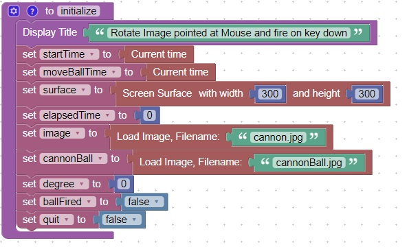
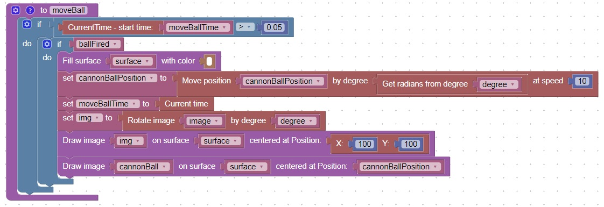
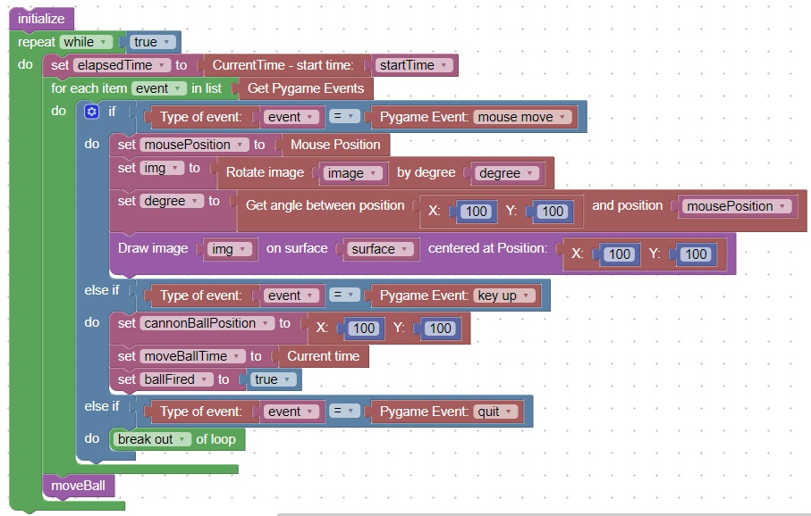

Rotate an Image to point at the mouse, then fire when a key is pressed
New Concepts
Concept
Description
1
You can break large chunks of code into smaller more manageable chunks or functions
2
You can execute code at a specific rate by checking elapsed time
Code
This code will initialize some variables

This code will move the cannonball in the direction of the mouse
It will also execute the code at a rate of once every 5 milliseconds or once every 0.05 seconds

This code will "fire" a cannonball when a key is released
It will stop when the QUIT(windows close) event is triggered

Here is what the screen looks like when a key is released